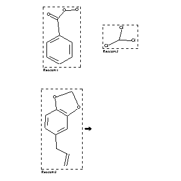

|  |
| FA | RX(1); FLST(1); RX(1) |
Reaction (1 of 1)
| Reaction ID | 5372129 |
| Reactant BRN | 1210120; 1731042; 136380 |
| Reactant | peroxybenzoic acid; trichloromethane; 5-allyl-benzo[1,3]dioxole |
| No. of Reaction Details | 1 |
Reaction Details (1 of 1)
| Reaction Classification | Chemical behaviour (half reaction) |
| Temperature | 0 |
| Subject Studied | Kinetics |
| Comment | Handbook |
| Citation Pointer | 1543242; Journal; Meerwein; JPCEAO; J.Prakt.Chem.; <2> 113; 1926; 11, 25; |
Reference (1 of 1)
| Citation Number | 1543242 |
| Document Type | Journal |
| Authors | Meerwein |
| CODEN | JPCEAO |
| Journal Title | J.Prakt.Chem. |
| (Series) Volume | <2> 113 |
| Publication Year | 1926 |
| Page | 11, 25 |